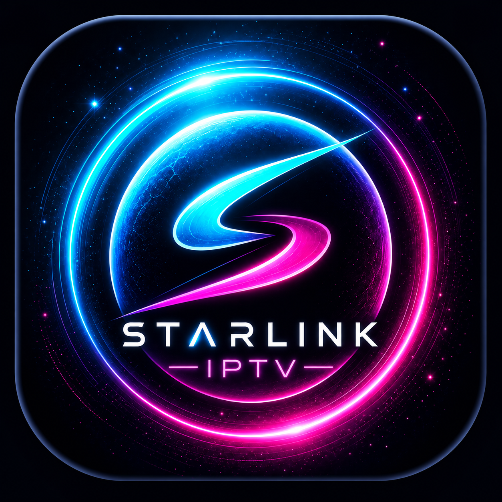

QA • CATÁLOGO AO VIVOSTARLINK DTV
QA 0.3.4 — Busca + GuiaSeu conteúdo, na sua TV.
Informe os dados do seu serviço Xtream.
Digite pelo controle
Setas movem. OK digita.
O player não fornece conteúdo. O login automatico guarda as credenciais localmente nesta TV. Desmarque em uma TV compartilhada.
Pronto para conectar.